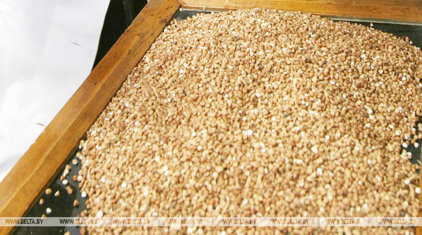

Gk / ukass
19.06
Вітаємо з Днем фермера!

Вітаємо з Днем фермера!
Згідно з учорашнім Указу президента, сьогодні Україна вперше святкує День фермера.
З цієї нагоди від щирого серця вітаємо українських фермерів з їх професійним святом і бажає їм, щоб держава нарешті почала відстоювати їх інтереси і зробило економічно самостійного селянина, який сам працює на власній землі, пріоритетом своєї політики!
Щиро вклоняємося перед нашими фермерами, які всі ці роки були прикладом працьовитості і витривалості, виживаючи і часто навіть зміцнюючи в найнесприятливіших обставин.
https://propozitsiya.com/pozdravlyaem-s-dnem-fermera
26.06
Закупівельні ціни на пшеницю нового врожаю в Україні опускаються

Українські аграрії ще не приступили до збирання пшениці, однак сприятливі опади червня і обіцяна на наступному тижні суха і тепла погода дозволяють сподіватися на поліпшення перспектив врожаю. Якщо після весняної посухи його оцінювали в 24-25 млн т, то зараз прогнози збільшили до 26-26,5 млн тонн.
Після підвищення прогнозів виробництва пшениці в Україні та Росії закупівельні ціни на вітчизняну пшеницю нового врожаю з доставкою в порт знизилися на 5-7 $ / т до 183-185 $ / т.
Внаслідок відсутності активного експортного попиту ціни пропозицій української пшениці опустилися до 193-195 $ / т FOB для поставок в липні-серпні, тоді як покупці не готові платити більше 190-192 $ / т FOB.
Закупівельні ціни на пшеницю старого врожаю з доставкою в порт залишаються на рівні 193-195 $ / т через відсутність пропозицій з боку виробників.
Після викликаного активної збиранням врожаю зниження цін на пшеницю на біржах США, вчора вони продовжили відновлюватися. Кількість посівів озимої пшениці в хорошому або відмінному стані на 21 червня збільшилася на 2% до 52% в порівнянні з 61% рік тому, а посівів ярої пшениці зменшилася на 6% до 75%, що майже відповідає торішнім 74%.
Озима пшениця в США обмолочено на 29% площ в порівнянні з 28% в середньому за 5 років.
Липневі пшеничні ф'ючерси в США виросли:
· на 0,37 $ / т до 178,57 $ / т, на м'яку озиму SRW-пшеницю в Чикаго,
· на 1,38 $ / т до 159,83 $ / т на тверду озиму HRW-пшеницю в Канзас-Сіті.
Впала на 1,74 $ / т до 188,86 $ / т тверда ярова HRS-пшениця в Міннеаполісі.
В Європі прохолодна погода без істотних опадів сприяє розвитку і наливу озимої пшениці. Зміцнення курсу євро щодо долара до 1,132 $ / € знижує конкурентоспроможність європейської пшениці.
Вересневі ф'ючерси на борошномельну пшеницю на MATIF впали на 1,5 € / т до 3-місячного мінімуму 177 € / т або 200,27 $ / т
https://propozitsiya.com/zakupochnye-ceny-na-pshenicu-novogo-urozhaya-v-ukraine-opuskayutsya
Cereras
19.06

Почти завершили работы в Брестской области - первый укос проведен на 97,1% запланированных площадей. Высокие темпы работ в Гомельской и Минской областях, где первый укос проведен на 88,3% и 82,8% площадей соответственно.
По данным на 18 июня, травы первого укоса убраны с 799,8 тыс. га, что составляет 84,3% к скошенному.
Заготовлено 65,9 тыс. т сена (6,52% к плану), 4 656,4 тыс. т сенажа (37%) и 402,6 тыс. т силоса (2,1%).
Всего в этом году планируется получить 9,3 млн т кормовых единиц травяных кормов, причем наибольшая доля придется на Минскую и Брестскую области. К этому времени заготовлено 15,1% от плана.
Силоса планируется заготовить почти 19,2 млн т, сенажа - 12,6 млн т (в том числе в полимерную упаковку 1,1 млн т), сена - 1,01 млн т.
26.06.20
Запасы гречки позволяют обеспечить потребности внутреннего рынка до нового урожая - Минсельхозпрод
В текущем году для обеспечения потребности внутреннего рынка Беларуси гречневой крупой отечественного производства в полном объеме в сельхозорганизациях более чем в два раза увеличены посевные площади гречихи - до 26,3 тыс. га (в 2019 году было 11,8 тыс. га). В Брестской области они составили 4,5 тыс. га, Витебской - 0,4 тыс. га, Гомельской - 6,5 тыс. га, Гродненской - 4,6 тыс. га, Минской - 5,4 тыс. га, Могилевской - 4,9 тыс. га. Планируется получить около 30 тыс. т гречихи в бункерном весе, или 20 тыс. т готовой крупы.
Переработкой гречихи и производством крупы занимаются два предприятия страны - филиал "Гомельский КХП" ОАО "Гомельхлебопродукт" и ОАО "Агрокомбинат "Скидельский". За пять месяцев предприятия произвели 4 тыс. т гречневой крупы, что в 2,3 раза больше по сравнению с аналогичным периодом прошлого года.
Министр сельского хозяйства и продовольствия Иван Крупко во время рабочей поездки посетил Гомельский комбинат хлебопродуктов, где провел встречу с трудовым коллективом и обсудил перспективы развития предприятия. Он ознакомился с техническим оснащением комбината, планами по расширению производства и выпускаемой продукцией.
Филиал "Гомельский КХП" ОАО "Гомельхлебопродукт" производит быстроразваривающуюся крупу высшего, первого, второго, третьего сортов и продел, а также непропаренную зеленую крупу для любителей здорового питания.